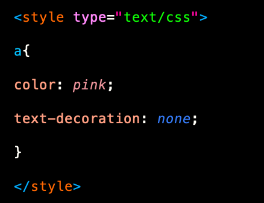
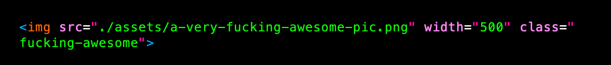
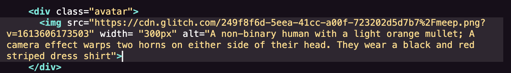
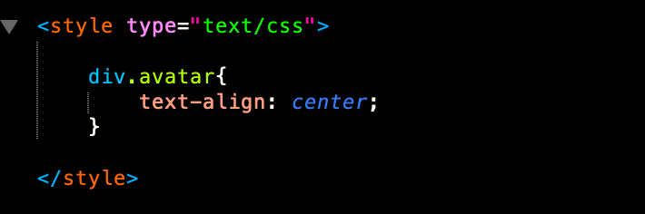
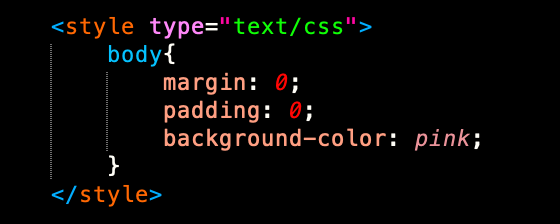
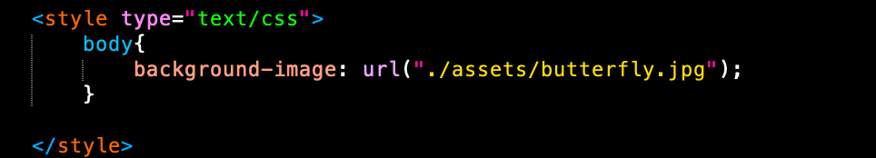
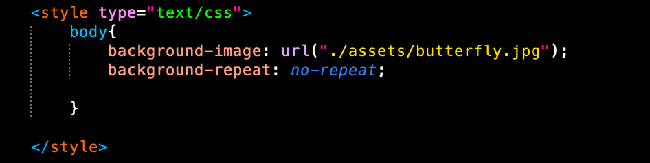
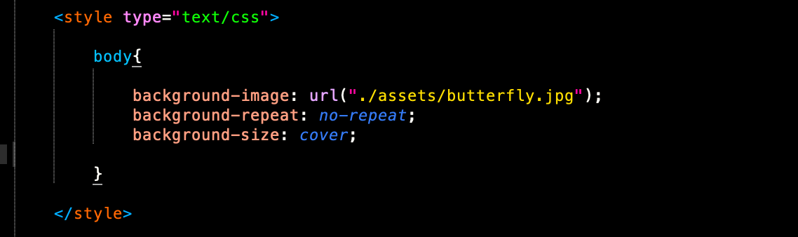

All websites start with an HTML file.
HTML stands for hypertext markup language. It is the skeleton of the world wide web! It's kind of like any text document, with it's own specific ruleset on how to lay things out and structure your web page.
The first HTML tag we have is called the head; This is basically where you give the browser a summary of what your web page is all about. You can add a title in for your page in the head, which will appear on the tab of your page.
Glitch is a tool because it gives you a template with everything you need for your webpage. All the important information you need is already in the head!
We can customize our webpage by adding styles, (CSS, Casading Style Sheet) and interaction (Javascript.)
CSS is like the skin of a website and Javascript is like it's muscles. I won't really be covering Javascript in this workshop, but feel free to use it on your own link tree if you're comfortable.
If we were building our site locally, we would link to the CSS file in the head and the Javascript file right before or after the body tag. The < body > tag contains the guts of our webpage <3
You don't even necessarily need to link to a separate document though! If you prefer you can write css styles inline or have a separate < style > tag that contains all the styles. I like to make a separate style sheet because it's just easier to look at. A note, the pictures I've included have the css wrapped in < style > because I chose to write them that way for the exercise. If you're linking a separate css file, you only need the code that starts with the tag and has curly brackets.
the hyperlink
At the core of any link tree is, of course, the hyperlink.
On link trees, these links or buttons appear to be 3D squares, but we can make them look any way we want, and we can even put them where we want on the page. There are a few different ways to do this.
the < a > tag is what makes the link clickable, and the href="" tells us the web address of where we are going.
By default, these are blue, and underlined, but we can customize this using CSS. we can do this by selecting the a tag and changing it's color: and text-decoration:

& now we have a pink link !!
changing the colors of elements
There are several ways to add colors to your page in css. We can denote color with hex values, rgba values, where a stands for the alpha channel, or opacity. There is also a collection of color keywords, which can be found on mozilla's site.
I often use colordot to get specific hex colors.
making our hyperlinks look like buttons
To make our hyperlinks look like buttons, we're going to give our < a > tag a border: There are a few differnt border types you can choose from, including solid, dotted, and dashed To acheieve a more border-like look, we'll also give it a border-radius: . We can even change the < a > tag's background-color. We'll also want to add some margins and padding.
We could also make these links look like buttons with this old school html tag,
Similarly, you can select the button tag and style it however you want in css.
hot take on target blank
It's possible that you might want to keep people on your page instead of sending them to an entirely new page. In this case, we can add target = "_blank " to our HTML tag.
Recently I read an article on css tricks about why using target blank wasn't a good idea because you are changing the default behavior when you could use the back button instead. Personally, I kind of like having a million tabs, and hate having to hit the back button, but this is totally up to you.
getting more specific with class and id
Perhaps we might want to make only some links pink, and the other ones green. We can do this a few different ways by being more specific in the way we write our html. We can do this by adding a class="" or an id="" to our < a > tag.
By adding a class, we can style multiple elements that belong to that same class in the same way.
Giving a tag an id is specific to only that one element, and can override anything in the class.
inline & block elements
We can think of HTML elements as different kinds of boxes that we stack inside of and on top of eachother.
Block elements, such as a div, by default take up the full width of the page with a size dictated by the content, where as inline elements for example a span, only takes up part of the width, and go with the flow of the page. inline elements don't cause line breaks, where as block elements do. This might be a little confusing at first, but don't worry, it'll start to make sense.
This page is a good reference if you're not sure whether an HTML element is inline or block.
Our links by default are inline, but we're actually going to change them to be block elements, so each link is on it's own line. We can do that by saying:
styling the layout so that it's responsive
We're going to want to put all of our links inside of a < div >
Then we'll want to give our div container a display:flex;
flexbox was added to css in 2013, and it's a pretty amazing tool for making the content on our pages responsive. Here is a complete guide to flexbox
After we add a font to our page, we can select an HTML tag and give it a font-family:
This HTML element could be the body if you want the whole page to have the same font. You could also select tags invivdually like < h1 >, < p > , or < a >
adding images
to add an image in html, all you have to do is write:

It's self contained and you don't need to close the tag.
In the quotes, you link to the image, so in our case we have a folder called assets that we can drop images into and then it gives us the option to copy that link and insert it in the quotes.
I usually just change the image width inline by adding width and the number of pixels, but you can specify in the css as well. if you just put a width, the height is usually automatic.
Don't forget the alt text...
Inside our image elements, we need to add alt text so that they can be read by screen readers and are accessible to users who are low vision or blind.
This is an image description of my avatar on my link tree. It's nice to paint the pictures with words too.

Images are by default inline, and treated like text. We can easily center our image by putting it into a div and then saying:

For responsiveness, we want to set our image display: inline-block and max-width: 100%
This means that our image will resize it's self based on the browser size
customizing your background
we can add a background color to our site by selecting the body tag in our css and adding a background-color.

adding a background image
we can add a background image like this:

If the image isn't large enough to cover the whole width of the screen, by default it will repeat. If you don't want this you can always change the repeat by saying:

Conversly, you could write background-repeat: repeat if you're going for the checkered look.
We also might want to set the background size to cover, so it covers the whole height and width of our page.

adding a background gradient
Gradients are really hot right now, and pretty simple to add as a background.